Where does nature pause? Where does an engineering system attain peak performance, resonance, or catastrophic failure?
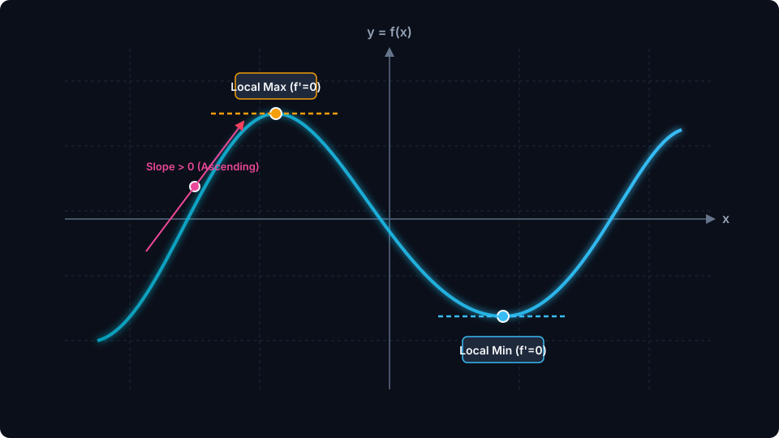
As an autonomous vehicle traverses terrain or an amplifier processes a signal, state variables continuously evolve. At the summits and basins, something remarkable occurs:
[Lecturer: Sketch tangent line slope vector at x₀]
Given a mathematical model of an engineering system, how do we systematically identify, rigorously classify, and safely verify its extreme operating states?
Fermat's Theorem, horizontal tangents, and critical numbers.
First Derivative Test (Sign Chart) vs Second Derivative Test (Curvature).
Extreme Value Theorem on [a, b]: Why endpoints hold catastrophic surprises.
Maximum Power Transfer Theorem and structural design applications.
"If a derivative is zero at a point, does the system definitely have a peak or valley? Why or why not?"
[Lecturer: Elicit student guesses; note the distinction between necessary and sufficient conditions]
In physical systems, extrema correspond to equilibrium states, limits of stability, and optimum operating points.
Force F = -dU/dx. At potential energy extrema (dU/dx = 0), net force vanishes:
Transmitting power from a source to a load resistor without reflection or thermal burn-out requires operating at the absolute peak of the power curve:
Balancing reaction kinetics against catalyst degradation curves. The global peak defines the optimal operating envelope:
Local extrema govern immediate neighborhoods; Absolute extrema govern the entire allowable physical domain.
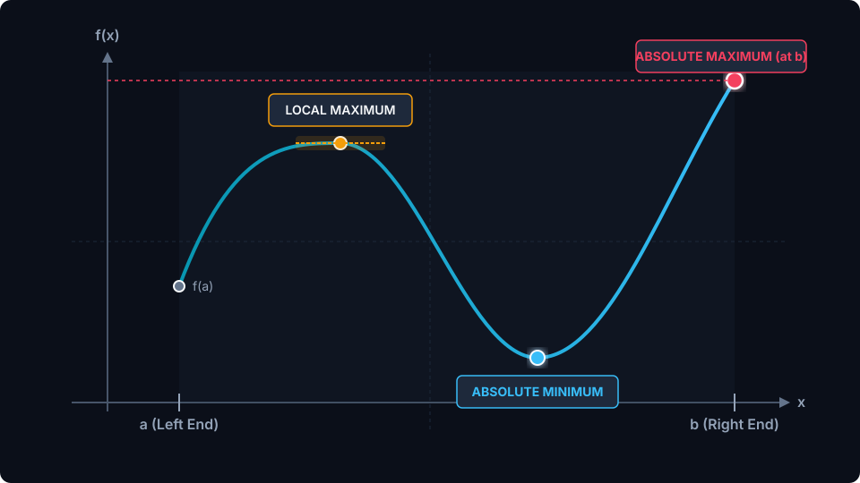
Notice on the graph: An interior turning point can be a local maximum while being completely surpassed by a boundary endpoint!
[Lecturer: Draw delta-neighborhood (c-δ, c+δ) around local peak]
The tangent slope directs the function's physical trajectory through the Mean Value Theorem.
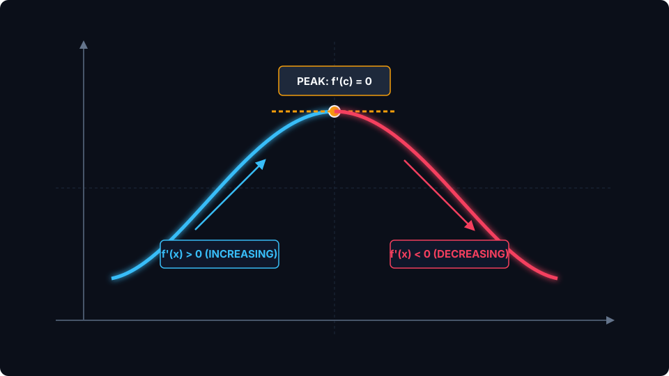
By the Intermediate Value Property of derivatives (Darboux's Theorem), if a smooth derivative switches from positive to negative, it must pass through zero.
[Lecturer: Write MVT proof sketch: (f(x2)-f(x1))/(x2-x1) = f'(c) > 0]
At any smooth interior turning point, the tangent line must become perfectly horizontal.
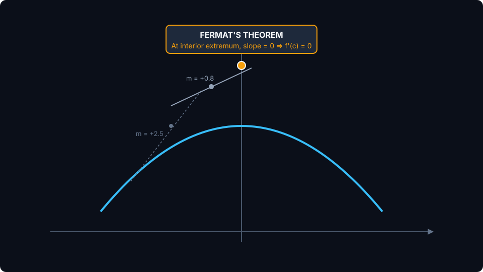
If $f$ has a local extremum at an interior point $c$ of its domain, and if $f'(c)$ exists, then:
Geometric Intuition: From the left, slopes $\ge 0$. From the right, slopes $\le 0$. Since $f'(c)$ exists, both one-sided limits must agree. The only real number $\ge 0$ and $\le 0$ is zero.
[Lecturer: Write limit of difference quotients from left and right]
A critical number is a candidate location where an extremum might reside.
Let $f$ be defined on an open interval containing $c$. The number $c$ is a critical number if:
⚠️ Critical Precondition: $c$ MUST be in the domain of $f$! A vertical asymptote (e.g. $x=0$ for $1/x$) is not a critical number because $f(0)$ is undefined.
In mechanical stress analysis or digital signal filtering, points where derivatives fail (sharp edges, impact shocks, digital thresholds) frequently represent the maximum stress or peak energy dissipation.
[Lecturer: Emphasize: Extrema can hide where f'(c) fails!]
Never restrict your search to f'(x) = 0. Real systems contain singularities!
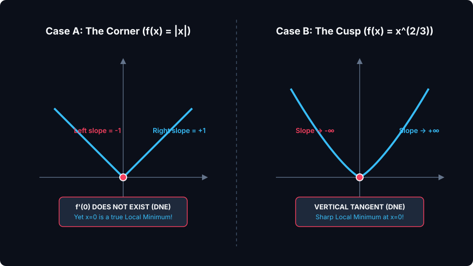
lim_{h→0⁻} (f(h)-0)/h = -1, while lim_{h→0⁺} (f(h)-0)/h = +1. Derivative DNE, but x = 0 is an absolute minimum!
f'(x) = 2 / (3 x^(1/3)). As x → 0, f'(x) → ±∞ (vertical tangent). Yet x = 0 is a sharp minimum!
[Lecturer: Write domain verification: 0 is in domain of x^(2/3) since 0^(2/3)=0]
f'(c) = 0 is a NECESSARY condition for smooth extrema, but NOT a SUFFICIENT condition!
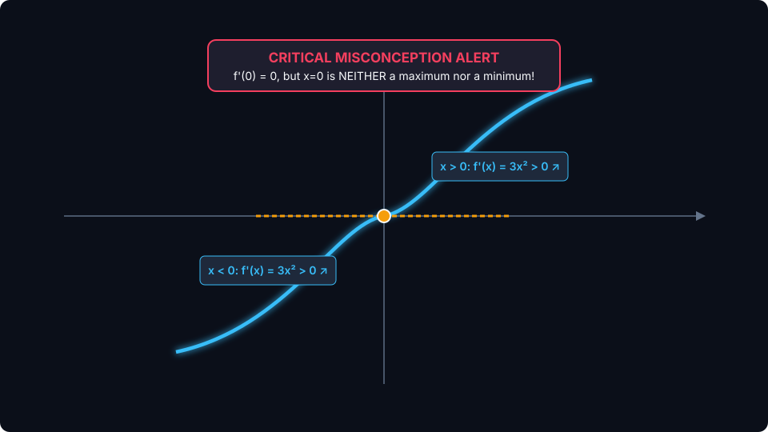
1. Compute derivative: f'(x) = 3x²
2. Evaluate at origin: f'(0) = 0 (Horizontal Tangent!)
3. Check neighborhood:
The slope paused, but NEVER turned around. This is a stationary inflection point (terrace point).
[Lecturer: Circle origin; write: "Critical Point = Candidate, not Verdict!"]
A deterministic engine for classifying critical points by inspecting the sign change of f'(x).
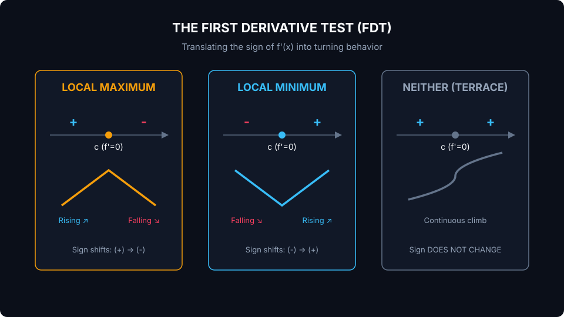
Stage 1: Differentiation, complete factorization, and critical number isolation.
Since f(x) is a polynomial, f'(x) exists everywhere on ℝ (no singular points).
The lecturer uses this space to write the intermediate steps, show common factoring errors (e.g. dividing by zero), and set up the number line.
[Lecturer: Partition real line at -1 and +1 with pencil ticks]
Stage 2: Translating algebraic sign intervals into verified extrema coordinates.
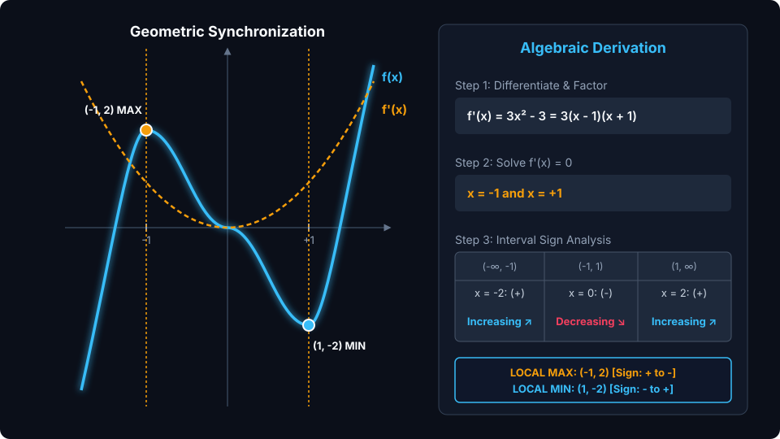
Geometric Synchronization: Notice how the roots of the derivative parabola $f'(x)$ coincide perfectly with the crest and trough of the cubic $f(x)$!
[Lecturer: Draw vertical guide lines connecting f'=0 to f(x) peaks]
f''(x) measures how fast the tangent slopes are changing: The bending of the curve.
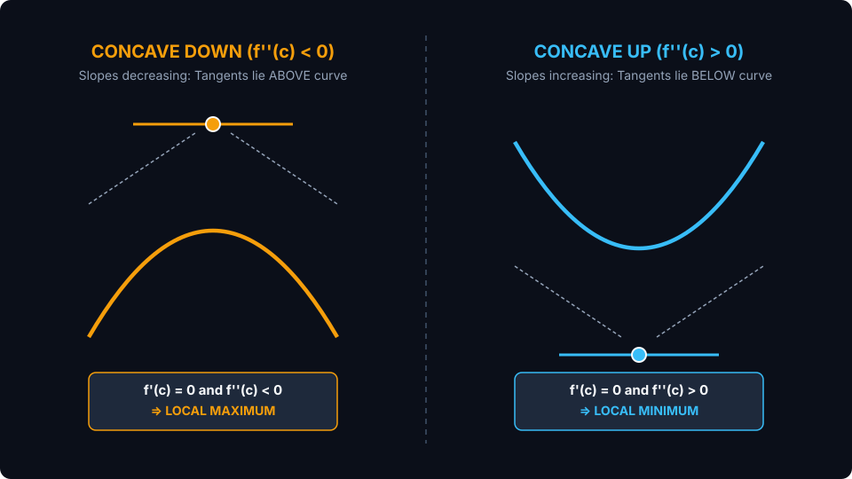
Slopes decrease (+ to 0 to -). Tangents lie ABOVE the curve. If f'(c) = 0, this geometric cage traps a LOCAL MAXIMUM.
Slopes increase (- to 0 to +). Tangents lie BELOW the curve. If f'(c) = 0, this geometric cage traps a LOCAL MINIMUM.
[Lecturer: "Cup holds water = Concave Up = Minimum"]
Evaluating f''(c) provides a single-point confirmation, but possesses critical failure modes.
If f''(c) = 0 (or is undefined), the Second Derivative Test is completely INCONCLUSIVE!
⚡ Verdict: When SDT fails, ALWAYS fall back to the First Derivative Test!
Extreme Value Theorem guarantees extrema on [a, b]. But engineers often forget the boundaries!
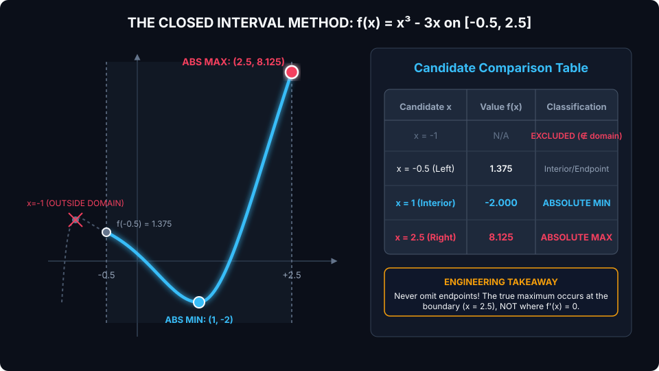
On $[-0.5, 2.5]$ for $f(x) = x^3 - 3x$, the absolute peak occurs at $x = 2.5$ ($y = 8.125$). An engineer who only checked $f'=0$ would miss the true peak stress by over 300%!
[Lecturer: Emphasize discarding x = -1 since -1 is outside [-0.5, 2.5]]
Balancing voltage drop against current draw in power systems and renewable energy harvesters.
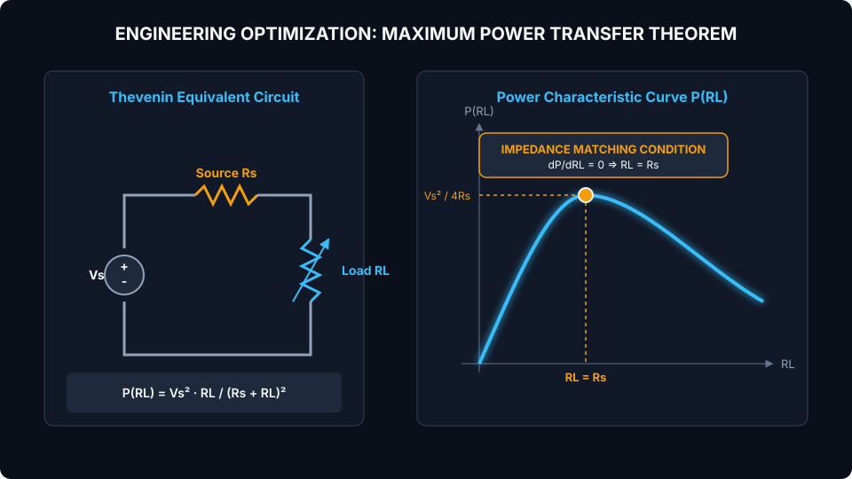
For $R_L < R_s$, $P' > 0$ (rising). For $R_L > R_s$, $P' < 0$ (falling). By FDT, $R_L = R_s$ is the unique absolute maximum!
[Lecturer: Mention 50% efficiency limit; solar MPPT controllers]
A square sheet of aluminum (12 cm × 12 cm) has square corners of size x removed to fold a chassis.
Find cut depth $x$ that maximizes volume $V(x)$ on its allowable domain $[0, 6]$.
Compare: V(0)=0, V(6)=0, V(2)=2(8)² = 128 cm³.
Allow 3-4 minutes for student calculation. Use Apple Pencil to sketch sheet unfolding and verify boundary behavior.
[Lecturer: Sketch square sheet with corner cutouts x by x]
A simply supported beam of length L under uniform load w has elastic deflection curve y(x).
Task:
1. Differentiate $y(x)$ with respect to $x$.
2. Prove that the maximum deflection occurs exactly at the midpoint $x = L/2$.
3. Evaluate maximum deflection $y_{\max}$ in terms of $w_0, L, E, I$.
[Lecturer: Work out factoring of 4x³ - 6Lx² + L³ = (2x - L)(2x² - 2Lx - L²)]
A fail-safe procedural pipeline from physical equation to verified optimum.
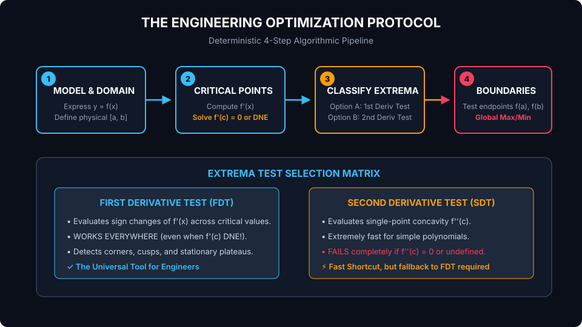
Three rapid conceptual checks to verify mastery before leaving the lecture hall.
"If $f'(3) = 0$, does $f(x)$ definitely possess a local maximum or minimum at $x = 3$?"
"If $f'(c) = 0$ and $f''(c) = 0$, what does the Second Derivative Test conclude?"
"Can an absolute maximum occur at an $x$ where $f'(x) \ne 0$?"
Rigorously verified solutions for all guided and independent exercises.
From one-dimensional curves to high-dimensional engineering manifolds.